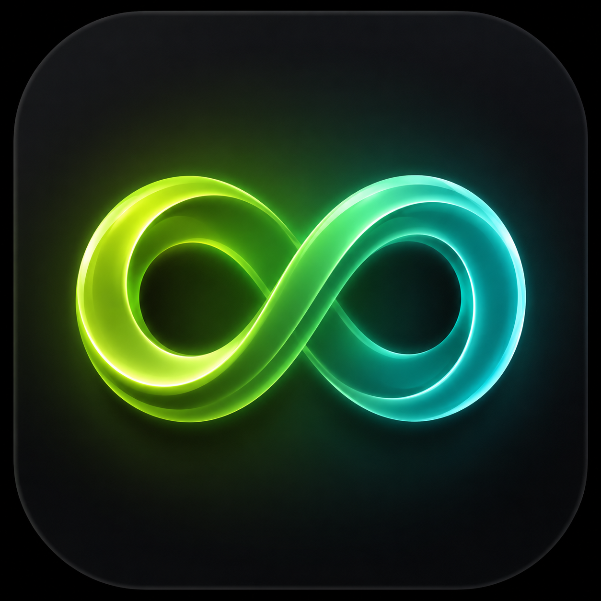
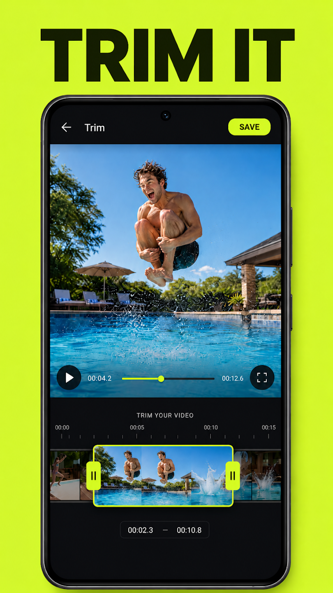
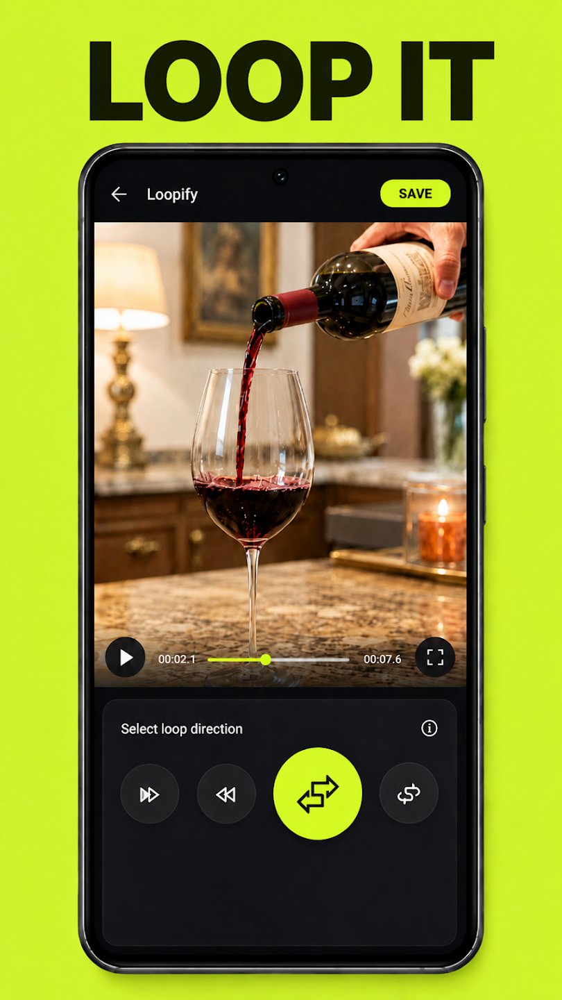
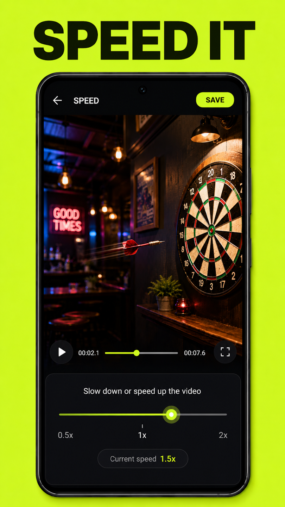
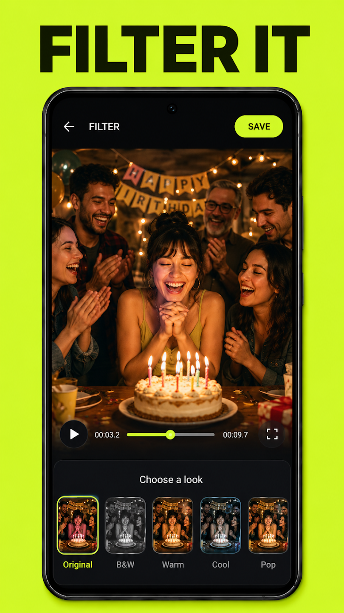
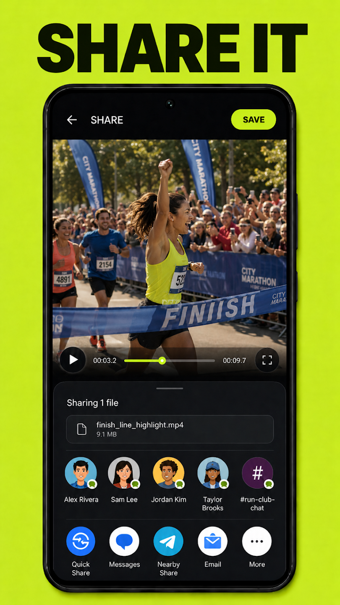

OpenLoop
Loops, lenses & photos — on your device
A free, open-source Android camera app. Turn a quick clip into a speed-controlled
video loop, add a live face lens, or just take a photo.
Free · No ads · No accounts · Apache 2.0 · Android 8.0+
What it does
- Speed-controlled loopsPick forward, reverse, or either bounce, then set playback speed with a live preview — not three fixed presets.
- Live face lensesSeven of them — Broccoli, Shades, Pizza Face, Football, Dog, Twisted Tongue and Elvis — render on the camera preview in real time and record into your clip. Two people in the shot? Both get the lens.
- Photo modeTap the shutter for a still instead of a clip — lenses included.
- Trim, look, shareA two-handle trim bar, colour looks, and your phone's normal share sheet.
- On-device processingEvery frame is decoded, reversed and re-encoded on your phone. Your video is never uploaded.
- Genuinely open sourceApache 2.0, every line readable, issues and pull requests welcome.
Screenshots





Privacy
Your video stays on your phone. Clips, loops and photos are processed entirely
on-device and are never uploaded. There are no accounts, no ads and no advertising ID.
OpenLoop does send limited, pseudonymous crash and usage diagnostics through Firebase
Crashlytics and Google Analytics for Firebase so bugs on real devices can be found and fixed —
the full detail is in the privacy policy.